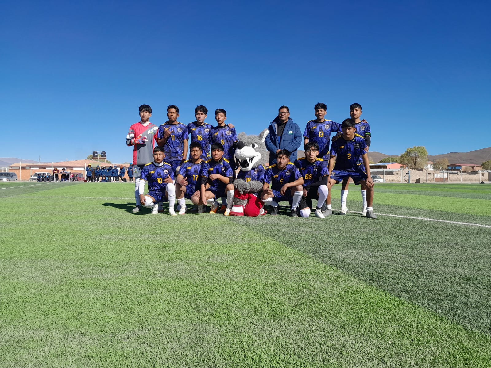

Mis Hobbies y Pasatiempos
En mi tiempo libre me gusta dedicarme a actividades que desafíen mi mente y mantengan mi cuerpo activo. Aquí te presento dos de mis mayores pasiones.
Hobby 1: Básquetbol (Baloncesto)
El básquetbol es más que un deporte para mí; es mi forma de liberar estrés y mantenerme en forma. Juego desde los 12 años en la posición de base organizador. Practico tres veces por semana con el equipo de mi colegio y participo en torneos locales los fines de semana.
Hobby 2: jugar al futbol
Me apasiona sentir la adrenalina en la cancha y la vibración de las tribunas. Me gusta salir a jugar o a alentar en las canchas de barrio, los estadios locales y las zonas periurbanas
